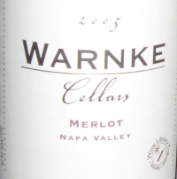

|
North America >
USA >
California >
Napa County >
Napa Valley >
Warnke Cellars >
Merlot Napa Valley
2005 Merlot Napa Valley
Warnke Cellars
Napa, CA

Vinted and bottled by Terroir in Napa, CA for the Wine Library tribute series.
Price: $11
14.7% alcohol
750 ml

2009 tasting - An opaque red, this Merlot has a sweet, deep bouquet coupled to a light dry flavor and an excellent finish with hints of butter.
More about Merlot.
|
|